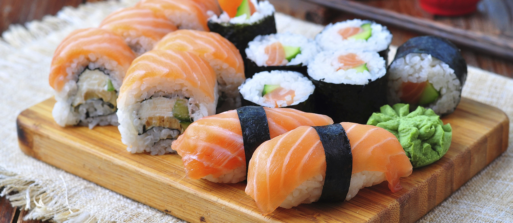

Perfect Sushi Rice
Here is the recipe for the perfect sushi rice. You can eat this alone or roll into your favorite sushi roll with ingredients of choice.
I use strips of carrots, cucumbers and slices of avocado. You can the amount of vinegar in this recipe to suit your taste.
Ingredients
- 2 cups uncooked glutinous white rice (sushi rice)
- 3 cups water
- ½ cup rice vinegar
- tablespoon vegetable oil
- ¼ cup white sugar
- 1 teaspoon salt
Directions
- Rinse the rice in a strainer or colander until the water runs clear
- Combine with water in a medium saucepan
- Bring to a boil, then reduce the heat to low, cover and cook for 20 minutes
- Rice should be tender and water should be absorbed. Cool until cool enough to handle
- In a small saucepan, combine the rice vinegar, oil, sugar and salt
- Cook over medium heat until the sugar dissolves
- Cool, then stir into the cooked rice
- When you pour this in to the rice it will seem very wet
- Keep stirring and the rice will dry as it cools
Return to top
Return to main page